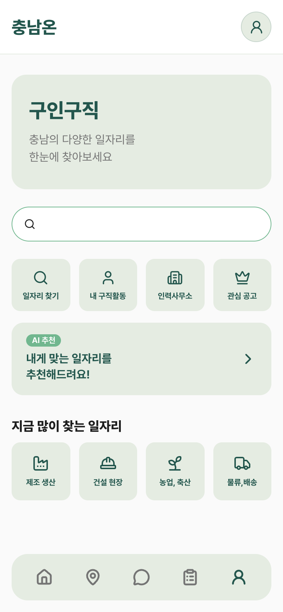
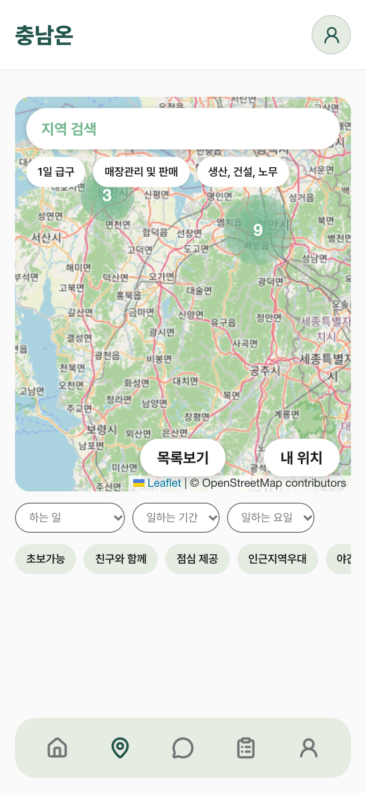
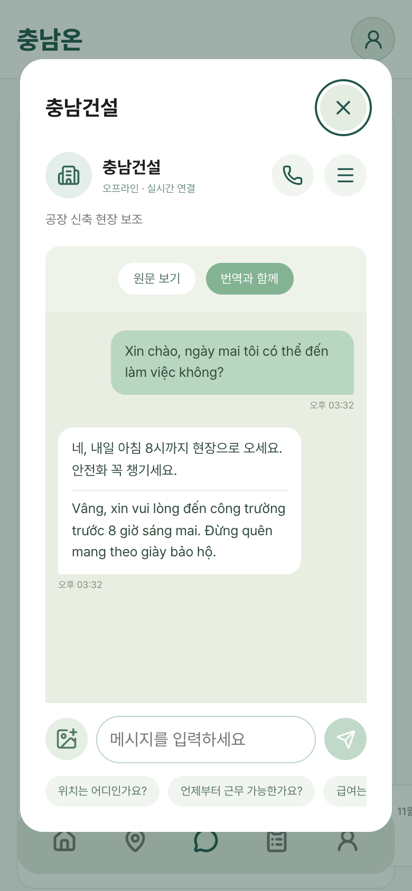
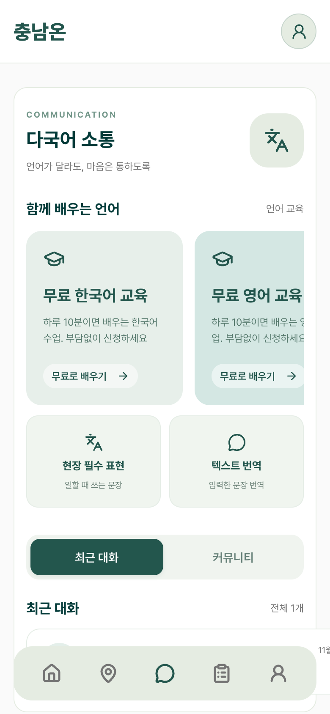
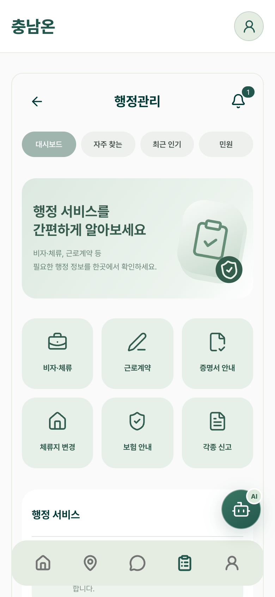
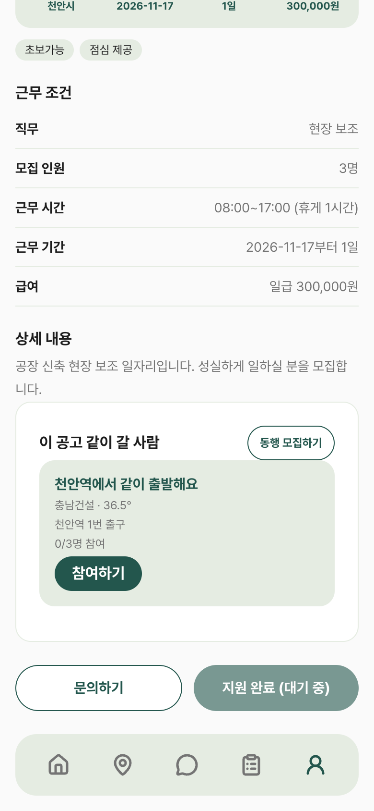
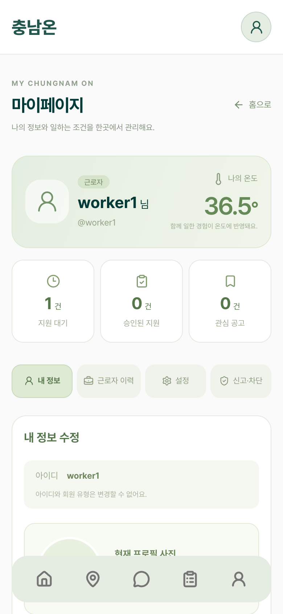

외국인 근로자의 일자리와 생활을 연결하다
공고, 근로조건, 현장 지시가 한국어로만 전달됩니다. 오해가 곧 사고와 분쟁이 됩니다.
체류 연장, 건강보험, 4대보험 정보는 흩어져 있고 대부분 어려운 한국어입니다.
계약서를 이해하지 못한 채 서명하고, 문제가 생겨도 어디에 알려야 할지 모릅니다.
일자리는 사무소와 지인 중심입니다. 내 주변에 어떤 일이 있는지 한눈에 볼 수 없습니다.
언어 · 정보 · 신뢰 — 세 가지 격차를 하나의 서비스로 줄입니다.
검색·필터·지원·문의이력 기반 맞춤 추천
내 주변 공고를지도에서 한눈에
출처가 있는 답변공고 검색·지원까지
정보 공유와같이 갈 동료 모집
채팅이 자동으로내 언어로 번역
한국어 · English · Tiếng Việt · ไทย · 中文 · Oʻzbek · ភាសាខ្មែរ · नेपाली · Indonesia · Монгол


확장 기능 음성 · 사진 번역, 실시간 현장 통역은 구현되어 있으며 Google API 연동 시 활성화됩니다.



사용자별 하루 질문 한도, 응답 스트리밍, 실패 시 가이드 검색 기반 간이 답변으로 자동 대체
일반 정보만 제공하고 확정적 판단은 하지 않으며, 공식 창구를 안내
지원·관심 등록은 사용자가 명시적으로 동의한 뒤에만 실행


React · Vite · React RouterLeaflet + OpenStreetMap
Django REST Framework · ChannelsJWT · Scalar API 문서(/docs)
번역 엔진·LLM은 어댑터로 분리해 키가 없어도 동작(개발용 대체 모드)하고, 설정만으로 교체됩니다.
기획서의 핵심 API(P0·P1) 구현, 챗봇·번역 고도화, API 문서 자동화
홈 · 구인구직 · 지도 · 다국어 소통 · 행정관리 · 마이페이지 · 커뮤니티
자동 테스트 + 브라우저 자동화로 지원→채팅 이동, 동행, 지도 흐름 확인
언어가 달라도, 일과 생활이 통하는 충남을 만듭니다
github.com/wonchandev/Chungnam-On
← → / Space 이동 · F 전체화면 · N 발표자 노트 · G 전체 보기 · P 인쇄(PDF)